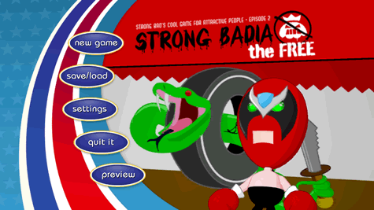
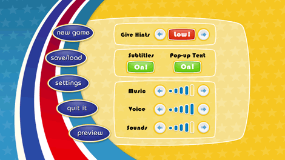
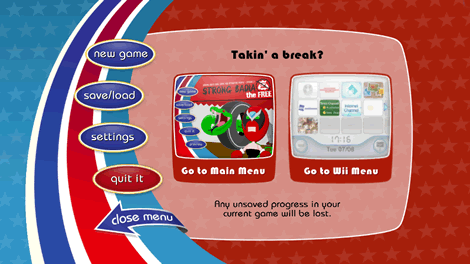

Selecciona "StrongBadia the Free" en el menú de Wii. La pantalla del canal se cargará. Para iniciar el episodio, apunta con el Puntero a Start y pulsa  . Esto hará aparecer el menú principal.
. Esto hará aparecer el menú principal.

El menú principal te ofrece las siguientes opciones:
- New Game: Empieza la partida desde el principio o juega el manual
- Save / Load: Guardar la partida actual o abrir una partida guardada
- Settings: Cambia el nivel de ayuda, activa o desactiva los subtítulos, textos emergentes, y regula los ajustes de sonido
- Quit It: Salir del juego y volver al menú de Wii
- Preview: Puedes ver un avance del próximo episodio de Strong Bad's Cool Game for Attractive People.
Para hacer cualquiera de estas cosas, apunta al letrero adecuado y pulsa
.
Apunta a New Game y pulsa . Puedes elegir entre empezar el episodio o jugar el manual. Si eres nuevo en este tipo de juego, quieres aprender o saber cómo funcionan los controles, empieza con el manual.
Apunta a Save/Load y pulsa . Tienes tres ranuras de guardado y un "autoguardar" que aparece en ciertos puntos de la partida. Cada autoguardado sobrescribe el anterior, así que si quieres poder volver a jugar otras partes de la partida luego, acuérdate de guardarlas en otra ranura. Para guardar la partida, apunta a Save junto a una de las ranuras y pulsa . Para cargar una partida guardada, apunta a Load junto a la ranura adecuada y pulsa .
Apunta a Save/Load y pulsa . Tienes cuatro ranuras de guardado. Para guardar la partida, apunta a Save junto a una de las ranuras y pulsa . Para cargar una partida guardada, apunta a Load junto a la ranura adecuada y pulsa .

Apunta a Settings y pulsa . Esta pantalla te permite cambiar los ajustes del juego. Para cambiar estos ajustes, apunta a los botones que aparecen en pantalla y pulsa . Estas son las opciones:
- Give Hints: Establece el nivel de ayuda. Así, si te quedas atascado durante la partida, el juego sabe cuándo darte una pista en la dirección correcta.
- Subtitles: Activa o desactiva los subtítulos que aparecen mientras los personajes están hablando.
- Pop-up Text: Activa o desactiva el texto que aparece cuando mueves el Puntero sobre un objeto con el que Strong Bad puede interactuar. (Incluso con el texto emergente desactivado, el Puntero se animará cuando te mueves sobre un objeto que puedes usar.
- Music: Ajusta el volumen de la música de fondo del juego.
- Voice: Ajusta el volumen de los diálogos.
- Sounds: Configura el volumen de los efectos de sonido del juego (como por ejemplo el de los pasos).

Apunta a Quit It y pulsa . Esta pantalla te permite salir del juego. Puedes elegir entre volver al menú principal del juego o al menú de Wii.
Apunta a Preview y pulsa para ver el avance del próximo episodio de Strong Bad's Cool Game for Attractive People.